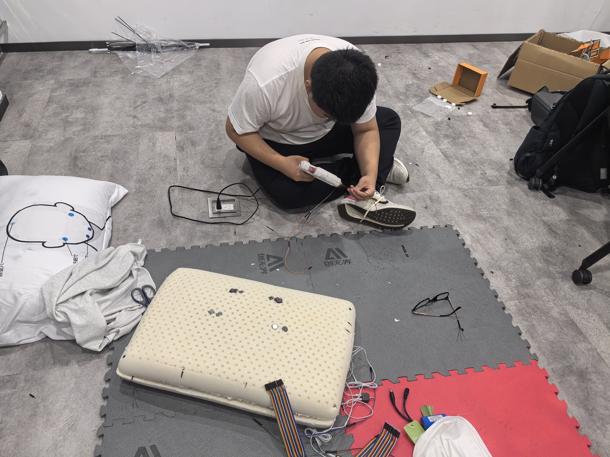
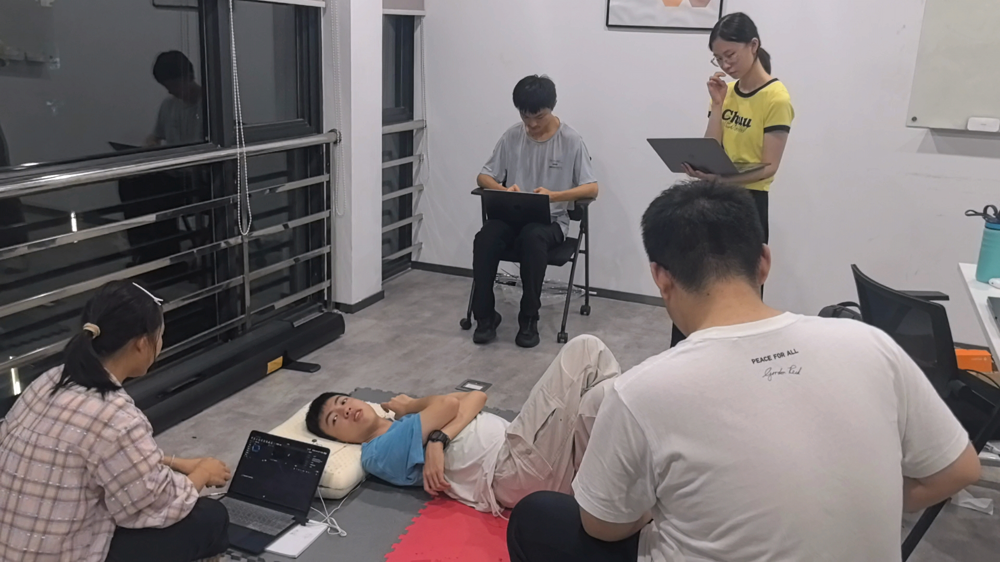
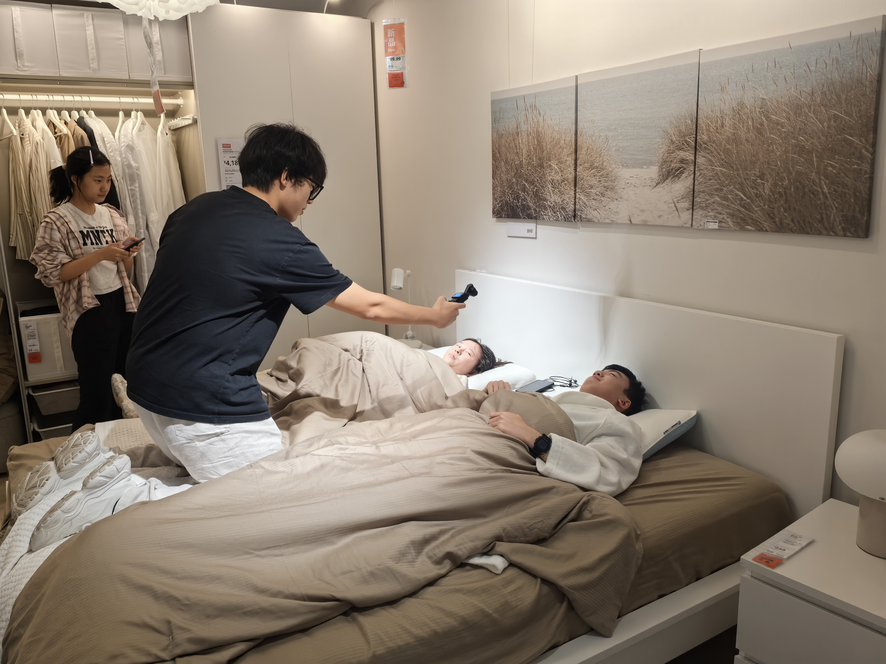
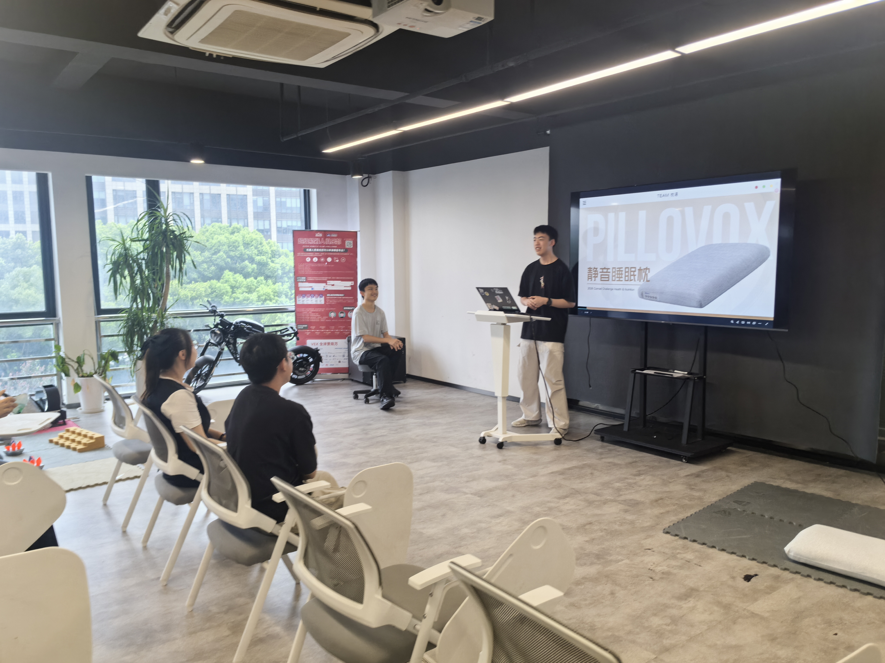
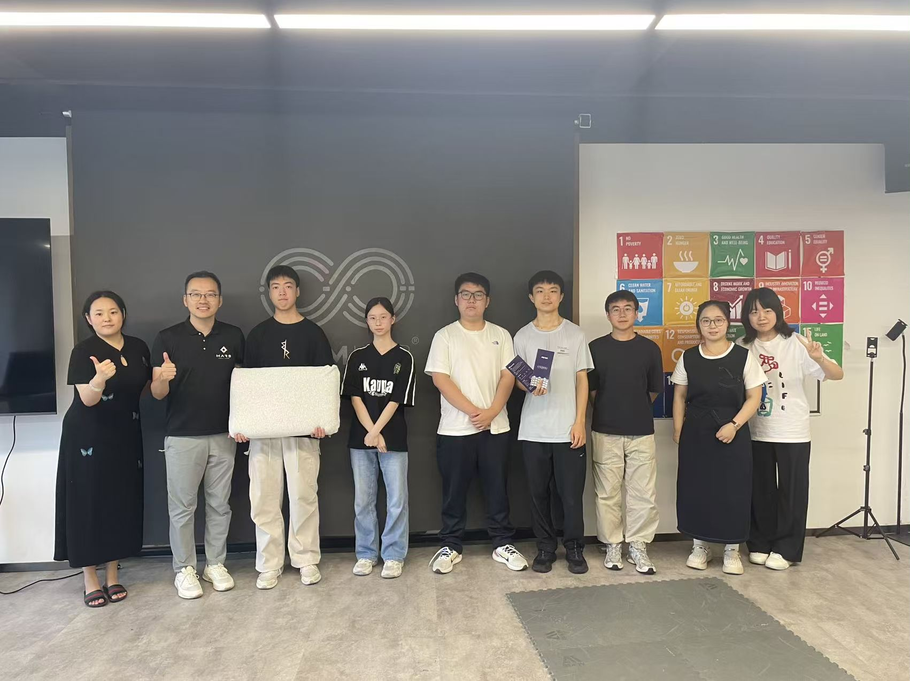
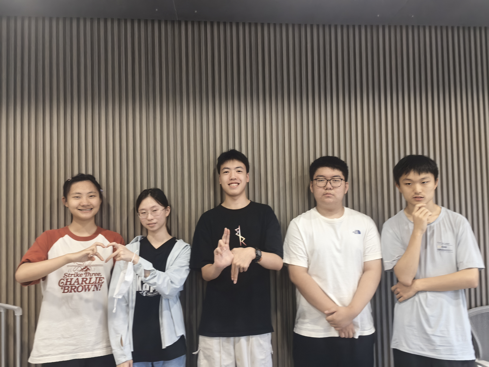

OUR STORIES
Somni 的故事
从亲手制作到面对面交流，记录枕语走过的每一步。点击照片，查看完整画面。

01原型制作 · 让想法有了形状
从元件连接到枕芯组装，亲手把关于安睡的想法，一点点做成可以体验的原型。
01 / SOMNI JOURNAL
02团队测试 · 在体验中打磨细节
轮流躺下体验，一起观察、记录与讨论，让每一次测试都成为下一次改进的起点。
02 / SOMNI JOURNAL
03场景试睡 · 把体验带进日常
走进卧室场景，记录试睡与产品展示，让枕语的使用方式与陪伴感被更直观地看见。
03 / SOMNI JOURNAL
04小型发布 · 分享枕语的初衷
以一场小型产品分享，讲述枕语的设计初衷与原型探索，在面对面的交流中听见更多想法。
04 / SOMNI JOURNAL
05厂商交流 · 探索产品落地的可能
与枕头厂商探讨产品思路与制作方向，把团队的创意与制造经验放在一起交流，探索后续合作的可能。
05 / SOMNI JOURNAL
06团队留影 · 记住并肩的这一刻
从动手制作到对外分享，镜头留下了并肩前行的我们，也留下了枕语成长路上的一段共同记忆。
06 / SOMNI JOURNAL